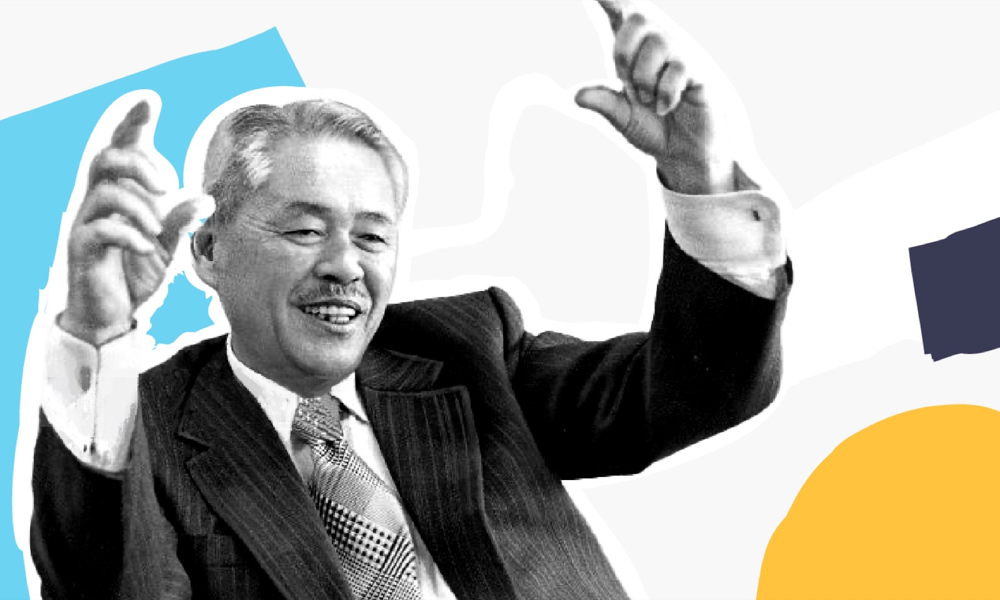

Taiichi Ohno was a Japanese industrial engineer and businessman who is widely regarded as the father of the Toyota Production System (TPS).

Ohno joined Toyota Motor Corporation in 1932 and played a pivotal role in revolutionizing the company's manufacturing processes. He developed the Toyota Production System, also known as Just-In-Time (JIT) production, which became a model for lean manufacturing and revolutionized the global manufacturing industry.
Ohno's key contributions include:
- Just-In-Time (JIT) Production: Ohno emphasized the importance of producing only what is needed, when it is needed, and in the required quantity. By eliminating waste, reducing inventory, and focusing on flow efficiency, Ohno aimed to improve productivity, quality, and responsiveness.
- Waste Reduction: Ohno identified various forms of waste, known as "muda," including overproduction, waiting time, transportation, excess inventory, and unnecessary motion.
- Kanban System: Ohno introduced the kanban system, also referred to as backlog, a visual signaling mechanism, to facilitate the flow of materials and information within the production system.
His principles and philosophies continue to shape lean manufacturing and serve as an inspiration for organizations seeking to improve efficiency, quality, and customer value.
Field: Organisational Structure
Major Contribution: Lean Manufacturing
Worked: Toyota Motor Corporation
Era: 1950
Best Quote: "All we are doing is looking at the time line from the moment the customer gives us an order to the point when we collect the cash. And we are reducing the time line by reducing the non-value-added wastes.”